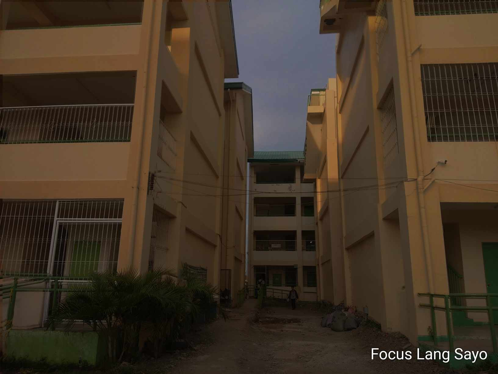

Sinalhan Integrated High School
The school of SIHS also called Sinalhan Integrated High School is a facility built by the government to nurture and improve the growth of the students nearby. The school offers a quality education and opportunities such as certification to allow the students for easier job hunting in their future endeavors.
